Virtual Machine Backup, Snapshot & Restore
Virtual Machine Backup & Restore
Virtual machine backups are created from the Virtual Machines page. The virtual machine backup volumes will be stored in the Backup Target (an NFS or S3 server), and they can be used to either restore a new virtual machine or replace an existing virtual machine.

|
A backup target must be configured. For more information, see Configure Backup Target. If no backup target is set, a message prompts you to configure one. Backup support is currently limited to Longhorn V1 Data Engine volumes. SUSE Virtualization is unable to create backups of volumes in external storage. |
Configure Backup Target
A backup target is an endpoint used to access a backup store in SUSE Virtualization. A backup store is an NFS server or S3 compatible server that stores the backups of virtual machine volumes. The backup target can be set at Settings > backup-target.
The following table outlines the parameters that are common to all backup targets.
| Parameter | Type | Description |
|---|---|---|
|
string |
Type of server that stores the backups of volumes used by virtual machines. You can select either |
|
integer |
Number of seconds that SUSE Virtualization waits before syncing backups with the backupstore. When the value is |
-
S3
-
NFS
| Parameter | Type | Description |
|---|---|---|
|
string |
(Optional) Hostname or IP address of the endpoint used to access the S3 server |
|
string |
Name of the S3 bucket |
|
string |
AWS Region in which the S3 bucket was created |
|
string |
First part of the access key you use to authenticate requests to AWS services (for example, |
|
string |
Second part of the access key you use to authenticate requests to AWS services (for example, |
Certificate |
string |
Self-signed SSL certificate of the S3 server |
VirtualHostedStyle |
boolean |
Option to use virtual-hosted–style URLs, wherein the bucket name is part of the domain name in the URL ( |
| Parameter | Type | Description |
|---|---|---|
Endpoint |
string |
URL of the NFS server |
Create a Virtual Machine Backup
-
Once the backup target is set, go to the
Virtual Machinespage. -
Click
Take Backupof the virtual machine actions to create a new virtual machine backup. -
Set a custom backup name and click
Createto create a new virtual machine backup.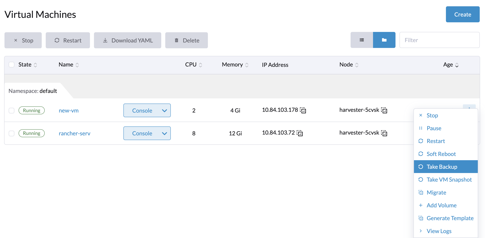
Result: The backup is created. You will receive a notification message, and you can also go to the Backup & Snapshot > VM Backups page to view all virtual machine backups.
The State will be set to Ready once the backup is complete.

Users can either restore a new virtual machine or replace an existing virtual machine using this backup.
|
The network configuration of a virtual machine running an Ubuntu release later than 16.04 is likely managed by The restored virtual machine retains the machine ID of the original virtual machine. If |
Restore a new virtual machine using a backup
-
Go to the
VM Backupspage. -
Click the
Restore Backupbutton at the top right. -
Specify the new virtual machine name and click
Create. -
A new virtual machine will be restored using the backup volumes and metadata, and you can access it from the
Virtual Machinespage.
Replace an existing virtual machine using a backup
You can replace an existing virtual machine using the backup with the same virtual machine backup target.
You can choose to either delete or retain the previous volumes. By default, all previous volumes are deleted.
Requirements: The virtual machine must exist and is required to be in the powered-off status.
-
Go to the
VM Backupspage. -
Click the
Restore Backupbutton at the top right. -
Click
Replace Existing. -
You can view the restore process from the
Virtual Machinespage.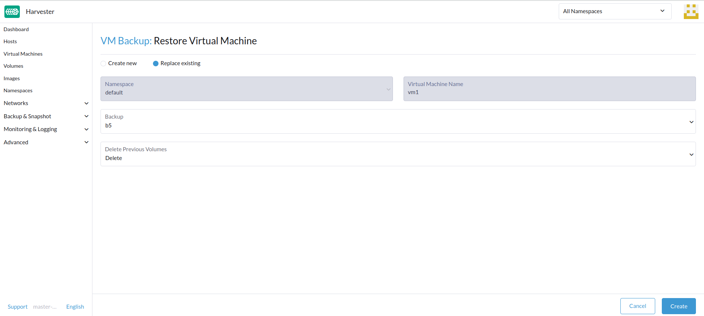
Restore a new virtual machine on another SUSE Virtualization cluster
Users can now restore a new virtual machine on another cluster by leveraging the virtual machine metadata & content backup feature.
Prerequisites
-
v1.4.0 and later: The controller automatically syncs the virtual machine images with the new cluster, except when a virtual machine image with the same name or display name already exists on the new cluster.
-
Earlier than v1.4.0: You must upload and configure the virtual machine images on the new cluster. Ensure that the image names and configuration are identical so that the virtual machines can be restored.
Upload the same virtual machine images to a new cluster
-
Download the virtual machine image from the existing cluster.
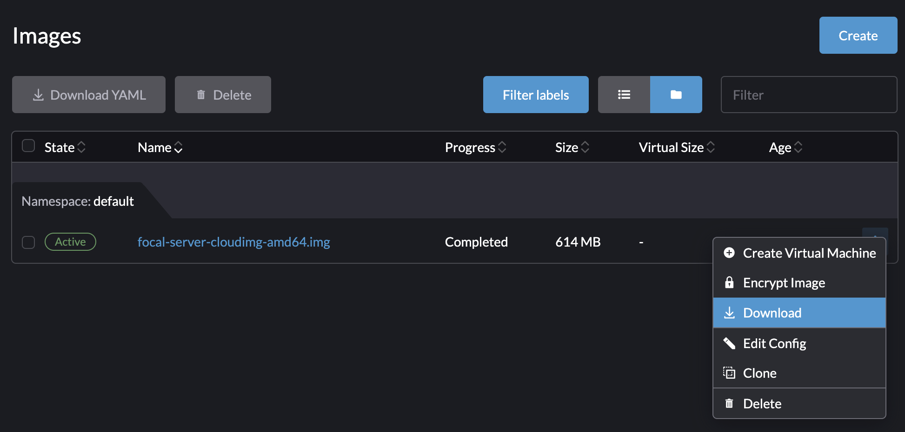 -
Decompress the downloaded image.
$ gzip -d <image.gz>
-
Host the image on a server that is accessible to the new cluster.
Example (simple HTTP server):
$ python -m http.server
-
Check the existing image name (normally starts with
image-) and create the same one on the new cluster.$ kubectl get vmimages -A NAMESPACE NAME DISPLAY-NAME SIZE AGE default image-79hdq focal-server-cloudimg-amd64.img 566886400 5h36m default image-l7924 harvester-v1.0.0-rc2-amd64.iso 3964551168 137m default image-lvqxn opensuse-leap-15.3.x86_64-nocloud.qcow2 568524800 5h35m -
Apply a
VirtualMachineImageYAML with the same name and configuration in the new cluster.Example:
$ cat <<EOF | kubectl apply -f - apiVersion: harvesterhci.io/v1beta1 kind: VirtualMachineImage metadata: name: image-79hdq namespace: default spec: displayName: focal-server-cloudimg-amd64.img pvcName: "" pvcNamespace: "" sourceType: download url: https://<server-ip-to-host-image>:8000/<image-name> EOF
SUSE Virtualization can restore virtual machines only if the image name and configuration on both old and new clusters are identical.
Restore a new virtual machine in a new cluster
-
Setup the same backup target in a new cluster. And the backup controller will automatically sync the backup metadata to the new cluster.
-
Go to the
VM Backupspage. -
Select the synced virtual machine backup metadata and choose to restore a new virtual machine with a specified virtual machine name.
-
A new virtual machine will be restored using the backup volumes and metadata. You can access it from the
Virtual Machinespage.
Virtual Machine Snapshot & Restore
Virtual machine snapshots are created from the Virtual Machines page. The virtual machine snapshot volumes will be stored in the cluster, and they can be used to either restore a new virtual machine or replace an existing virtual machine.

Create a Virtual Machine Snapshot
-
Go to the
Virtual Machinespage. -
Click
Take VM Snapshotof the VM actions to create a new virtual machine snapshot. -
Set a custom snapshot name and click
Createto create a new virtual machine snapshot.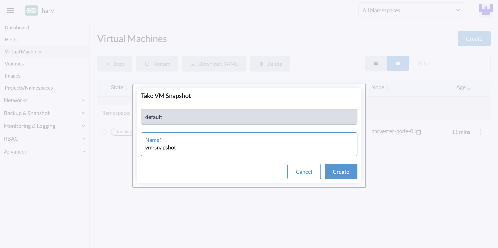
Result: The snapshot is created. You can also go to the Backup & Snapshot > virtual machine Snapshots page to view all VM snapshots.
The State will be set to Ready once the snapshot is complete.
Users can either restore a new virtual machine or replace an existing virtual machine using this snapshot.
|
The network configuration of a virtual machine running an Ubuntu release later than 16.04 is likely managed by The restored virtual machine retains the machine ID of the original virtual machine. If |
Restore a new virtual machine using a snapshot
-
Go to the
VM Snapshotspage. -
Click the
Restore Snapshotbutton at the top right. -
Specify the new virtual machine name and click
Create. -
A new virtual machine will be restored using the snapshot volumes and metadata, and you can access it from the
Virtual Machinespage.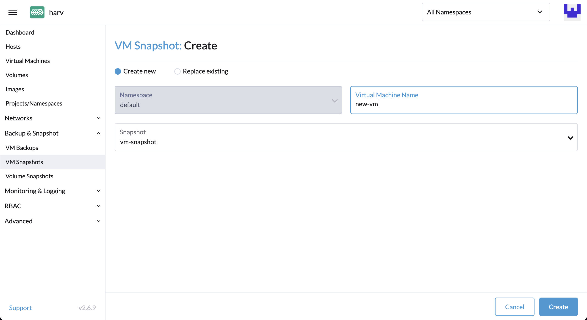
Replace an existing virtual machine using a snapshot
You can replace an existing virtual machine using the snapshot.
|
You can only choose to retain the previous volumes. |
-
Go to the
VM Snapshotspage. -
Click the
Restore Snapshotbutton at the top right. -
Click
Replace Existing. -
You can view the restore process from the
Virtual Machinespage.
Virtual Machine Snapshot Space Management
Volumes consume extra disk space in the cluster whenever you create a new virtual machine backup or snapshot. To manage this, you can configure space usage limits at the namespace and virtual machine levels. The configured values represent the maximum amount of disk space that can be used by all backups and snapshots. No limits are set by default.
Configure the Snapshot Space Usage Limit at the Namespace Level
-
Go to the Namespaces screen.
-
Locate the target namespace, and then select ⋮ → Edit Quota.
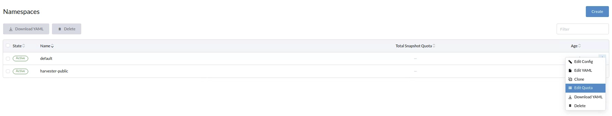 -
Specify the maximum amount of disk space that can be consumed by all snapshots in the namespace, and then and click Save.
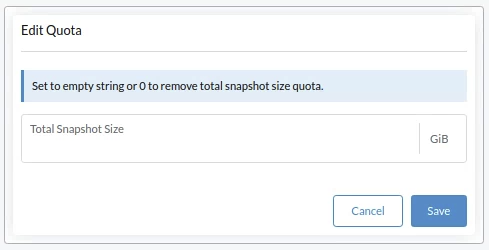 -
Verify that the configured value is displayed on the Namespaces screen.
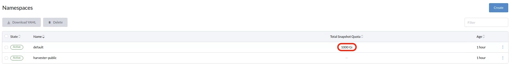
Configure the Snapshot Space Usage Limit at the Virtual Machine Level
-
Go to the Virtual Machines screen.
-
Locate the target virtual machine, and then select ⋮ → Edit VM Quota.
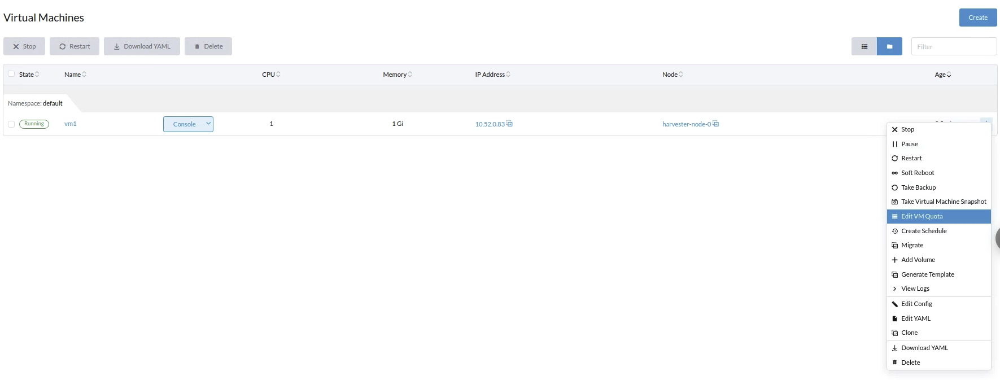 -
Specify the maximum total amount of disk space that can be consumed by all snapshots for the virtual machine, and then and click Save.
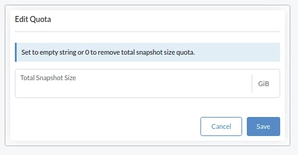 -
Verify that the configured value is displayed on the Quotas tab of the virtual machine details screen.
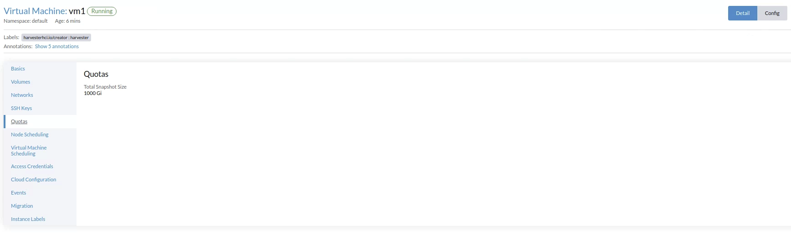
Filesystem freeze for virtual machine backups and snapshots
When a guest virtual machine is connected with the QEMU Guest Agent, the SUSE Virtualization controller performs filesystem freeze operations through Kubevirt’s virt-freezer application to ensure filesystem consistency during virtual machine backups and snapshots.
This feature is particularly valuable for virtual machines with high I/O activity or critical data that requires point-in-time consistency guarantees.
Prerequisites
Filesystem freeze and thaw functionality depends on virtual machine configuration, which is not controlled by SUSE Virtualization. You must ensure that virtual machines are configured correctly and support the required libvirt commands.
-
Red Hat Enterprise Linux (RHEL) and SUSE Linux Enterprise (SLE) Micro: These systems may lack sufficient permissions for filesystem freeze operations by default. You may be required to create custom SELinux policies.
-
Windows: Filesystem freeze operations are available on these systems only when the Volume Shadow Copy Service (VSS) service is enabled.
|
When the virt-freezer application is triggered, KubeVirt communicates with the QEMU Guest Agent to translate operating system-specific calls. Linux systems use fsfreeze syscalls, while Windows systems use VSS APIs. |
Verifying filesystem freeze compatibility
To verify that your virtual machine supports filesystem freeze operations, perform the following steps:
-
Access the virtual machine’s virt-launcher
computecontainer.POD=$(kubectl get pods -n default \ -l vm.kubevirt.io/name=vm1 \ -o jsonpath='{.items[0].metadata.name}') kubectl exec -it $POD -n default -c compute -- bash -
Attempt to freeze the filesystem using the virt-freezer application, which is available in the
computecontainer:virt-freezer --freeze --namespace <VM namespace> --name <VM name> -
Verify the result of the freeze operation.
Do not skip this step. In addition, you must thaw virtual machine filesystems before performing any other operations.
Troubleshooting filesystem freeze issues
Filesystem freeze error due to insufficient permissions
A Failed to freeze filesystem error may cause backup or snapshot failures on some Linux distributions.
This issue typically occurs when SELinux denies read access to the QEMU Guest Agent (qemu-ga). You can verify the cause using the following steps:
-
[Verify that your virtual machine supports filesystem freeze operations](#verifying-filesystem-freeze-compatibility).
-
Check for SELinux
Permission deniederrors in the system logs.If you see a message similar to the following, SELinux is blocking the required access:
{"component":"freezer","level":"error","msg":"Freezing VMI failed","reason":"server error. command Freeze failed: \"LibvirtError(Code=1, Domain=10, Message='internal error: unable to execute QEMU agent command 'guest-fsfreeze-freeze': failed to open /data: Permission denied')\""}
To resolve the issue, you must create and install a custom SELinux policy module. This solution has been verified to work with RHEL and SLE Micro.
|
Using |
-
Generate a custom SELinux policy module from audit logs.
grep qemu-ga /var/log/audit/audit.log | audit2allow -M my_qemu_ga -
Install the generated policy module.
semodule -i my_qemu_ga.pp -
Repeat steps 1 and 2 until virt-freezer can successfully freeze the filesystems.
You must thaw virtual machine filesystems before performing other operations.
virt-freezer --unfreeze --namespace <VM namespace> --name <VM name>
Scheduled virtual machine backups and snapshots
SUSE Virtualization supports the creation of virtual machine backups and snapshots on a scheduled basis, with the option to retain a specific number of backups and snapshots. You can suspend, resume, and update the schedule at runtime.
Create the Virtual Machine Schedule
-
Go to the Virtual Machine Schedules screen, and then click Create Schedule.
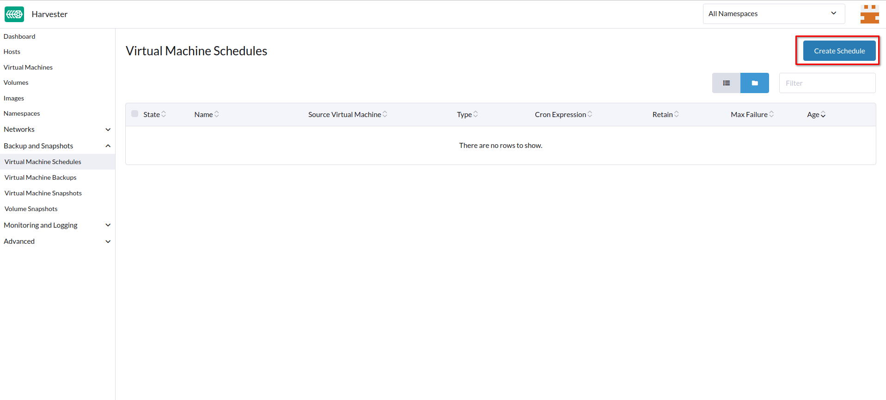 -
Configure the following settings:
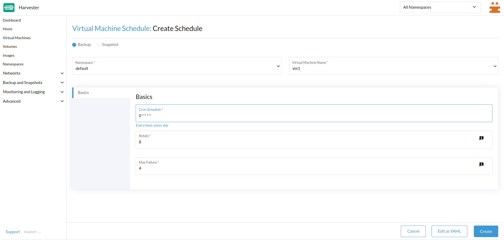-
Type: Select either Backup or Snapshot.
-
Namespace and Virtual Machine Name: Specify the namespace and name of the source virtual machine.
-
Cron Schedule: Specify the cron expression (a string consisting of fields separated by whitespace characters) that defines the schedule properties.
The backup or snapshot creation interval must be at least one hour. Frequent backup or snapshot deletion results in heavy I/O load.
If two schedules have the same granularity level, each iteration’s timing offset must be at least 10 minutes.
-
Retain: Specify the number of up-to-date backups or snapshots to be retained.
When this value is exceeded, the SUSE Virtualization controller deletes the oldest backups or snapshots, and Longhorn starts the snapshot purge.
-
Max Failure: Specify the maximum number of consecutive failed backup or snapshot creation attempts to be allowed.
When this value is exceeded, the SUSE Virtualization controller suspends the schedule.
-
-
Click Create.
Check the Status of a Virtual Machine Schedule
-
Go to the Virtual Machine Schedules screen.
-
Locate the target schedule, and then click the name to open the details screen.
-
On the Basics tab, verify that the settings are correct.
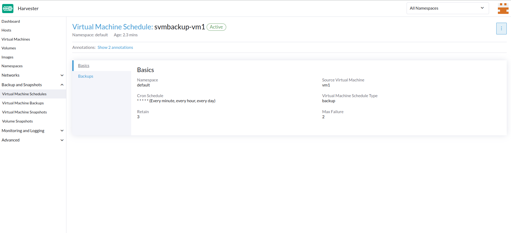 -
On the Backups tab, check the status of the backups or snapshots that were created according to the schedule.
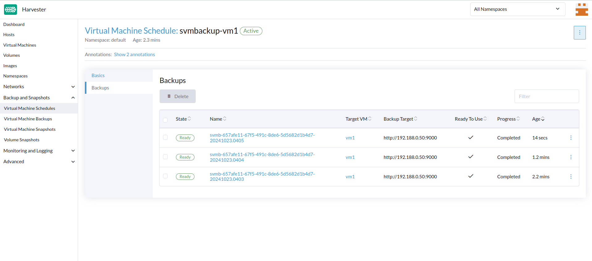Backups and snapshots that are marked Ready can be used to restore the source virtual machine. For more information, see Virtual Machine Backup & Restore and Virtual Machine Snapshot & Restore.
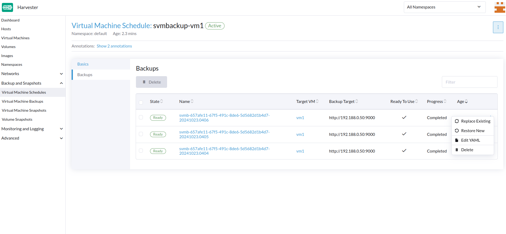
Edit a Virtual Machine Schedule
-
Go to the Virtual Machine Schedules screen.
-
Locate the target schedule, and then select ⋮ → Edit Config.
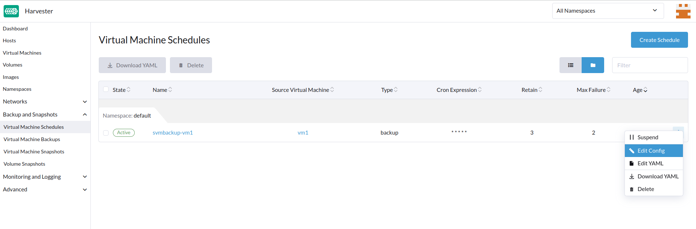 -
Edit the Cron Schedule, Retain, or Max Failure values.
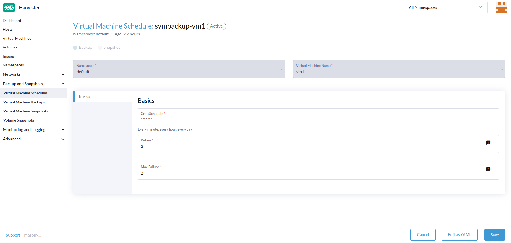 -
Click Save to apply the changes.
Suspend or Resume a Virtual Machine Schedule
You can suspend active schedules and resume suspended schedules.
-
Go to the Virtual Machine Schedules screen.
-
Locate the target schedule, and then select ⋮ → Suspend or Resume.
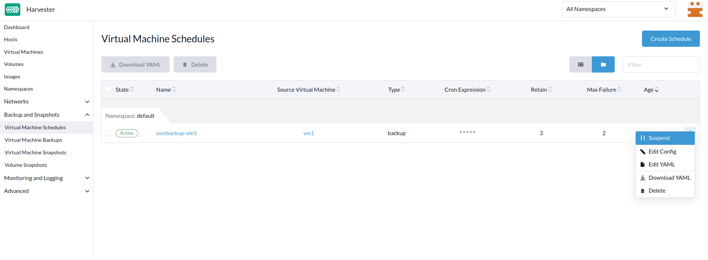The schedule is automatically suspended when the number of consecutive failed backup or snapshot creation attempts exceeds the Max Failure value.
SUSE Virtualization does not allow you to resume a suspended schedule for backup creation if the backup target is not reachable.
|
If a schedule was automatically suspended because the Max Failure value was exceeded, you must explicitly resume that schedule after verifying that the backup or snapshot can be created successfully. For example, when the backup target becomes reachable again after a period of disconnection, you can first create a backup manually and check the result. |
Virtual Machine Operations and SUSE Virtualization Upgrades
Before you upgrade SUSE Virtualization, ensure that no virtual machine backups or snapshots are in use, and that all virtual machine schedules are suspended. The SUSE Virtualization UI displays the following error messages when upgrade attempts are rejected:
-
Virtual machine backups or snapshots are being created, deleted, or used during the upgrade attempt
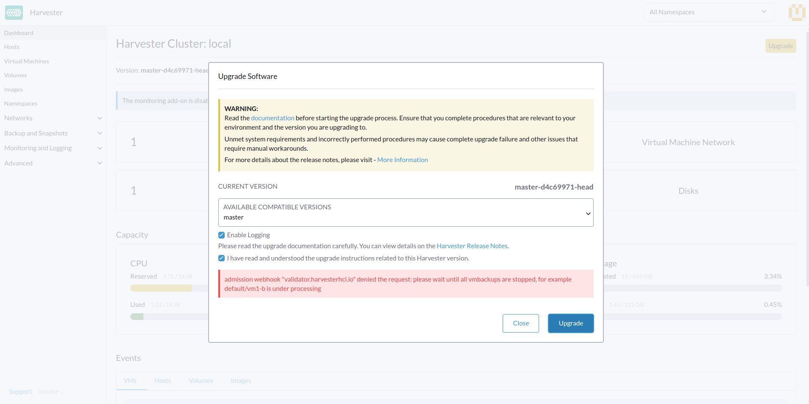 -
Virtual machine schedules are active during the upgrade attempt
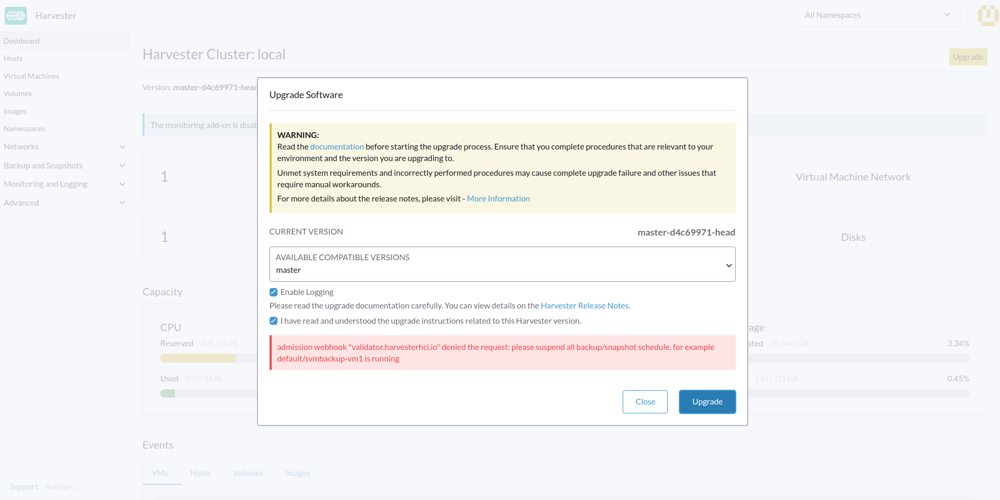
To avoid such issues, SUSE plans to implement automatic suspension of all virtual machine schedules before the upgrade process is started. The suspended schedules will also be automatically resumed after the upgrade is completed. For more information, see Issue #6759.
|
SUSE Storage has a similar feature called recurring snapshots and backups, which uses recurring jobs to create periodic snapshots or backups of SUSE Storage volumes. This feature is not integrated into SUSE Virtualization because it conflicts with certain operations (for example, virtual machine attachment and cluster upgrades). Recurring SUSE Storage snapshot and backup jobs can also generate heavy I/O without SUSE Virtualization’s awareness, and in some cases, even destabilize the cluster. For best results, use the scheduled virtual machine backups and snapshots feature in SUSE Virtualization, which has safeguard mechanisms that mitigate heavy I/O when possible. Again, SUSE Virtualization does not support recurring SUSE Storage snapshots and backups. |